ребрендинг телешоу
Ребрендинг
Последним этапом развития проекта было его приземление до реально существующего. Мой выбор пал на ребрендинг телешоу "Пацанки"
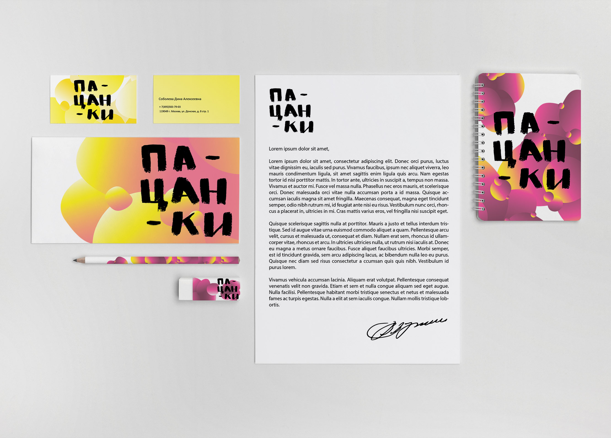Телешоу "Пацанки" Что это?
Героини проекта «Пацанки» лишены родительской любви и понимания окружающих. Они – заложницы неблагополучного окружения и образа жизни. Пацанки понимают, что дальше так жить нельзя, поэтому хотят измениться. Профессиональные педагоги и психологи «Пацанок» подготовят для девушек задания, каждое из которых станет маленьким шагом на пути к большой цели. Смелый социальный эксперимент поможет пацанкам заново открыться миру, полюбить его и себя.
Почему ребрендинг телешоу?
Метафорой моего изначального проекта было "изменение", "преображение". Концепция телешоу "Пацанки" напрямую связанна с идей создания магазина качеств "Холон".
Цель
Путь к созданию итогового стиля заключал в себя поиск, который требовал много работы и времени. В результате, итоговая работа состояла из 3 фирменных стилей, один из готорых был итоговым.
1 стиль
Идеей первого варианта брендинга стала передача внутреннего и внешнего состояния через окна, как призму истины или лжи. Весь фирменный стиль содержит упрощенную форму рамы окна.
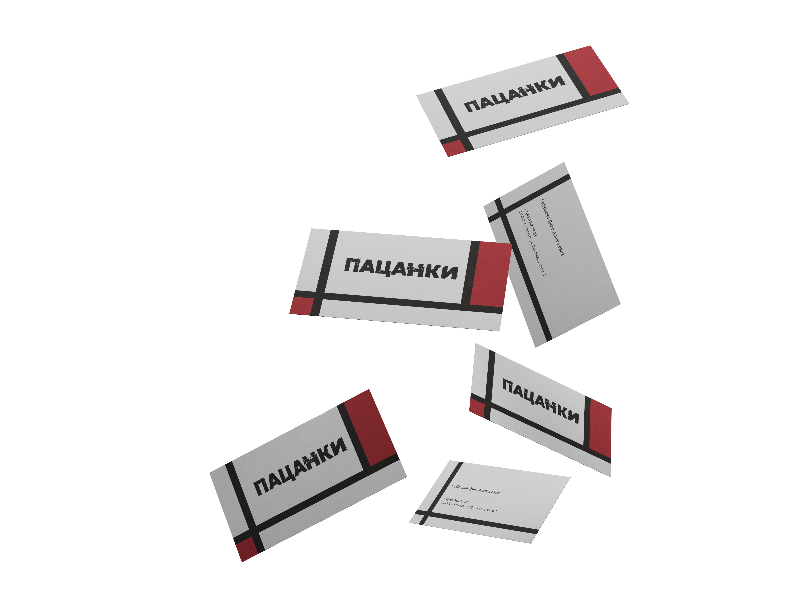Фирменный стиль
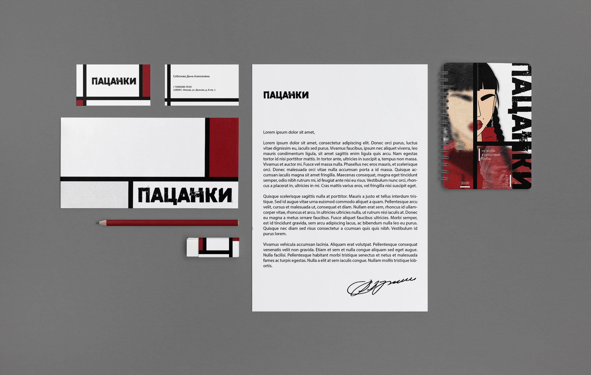Плакаты
2 стиль
Метафорой второго концепта стало скрытие, Пацанки обладают добрым сердцем, которое было ранено в детстве или в подростковом возрасте, поэтому они спрятали себя от всего мира, боясь новой боли.
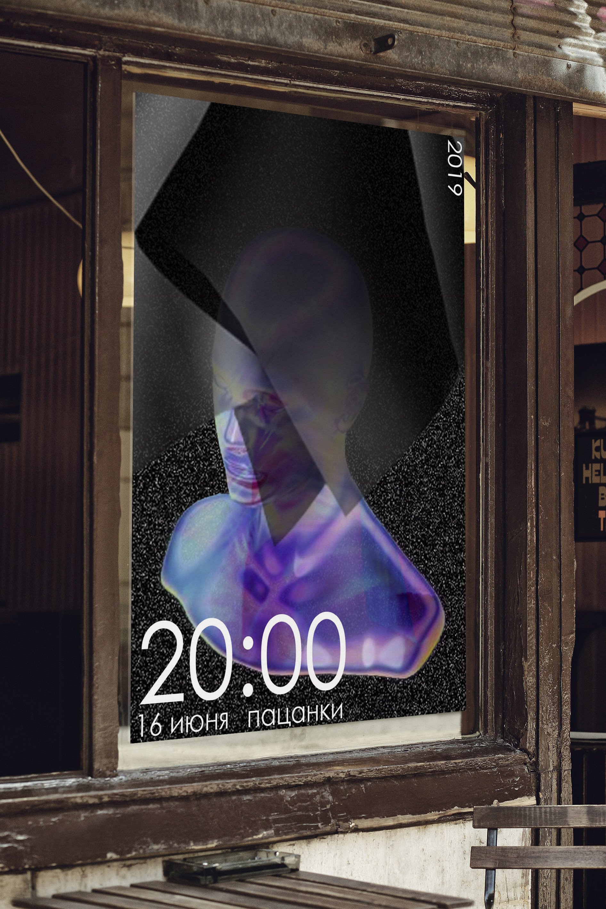Фирменный стиль
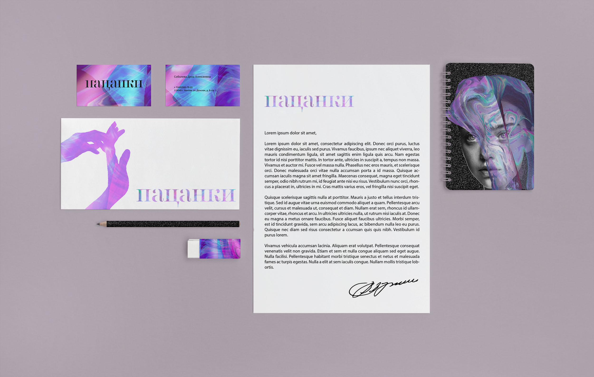Плакаты
Итоговый стиль
Метафорой этого концепта является контраст. Контраст между тем, что находится в душе героинь шоу и тем, как они преподносят себя обществу.
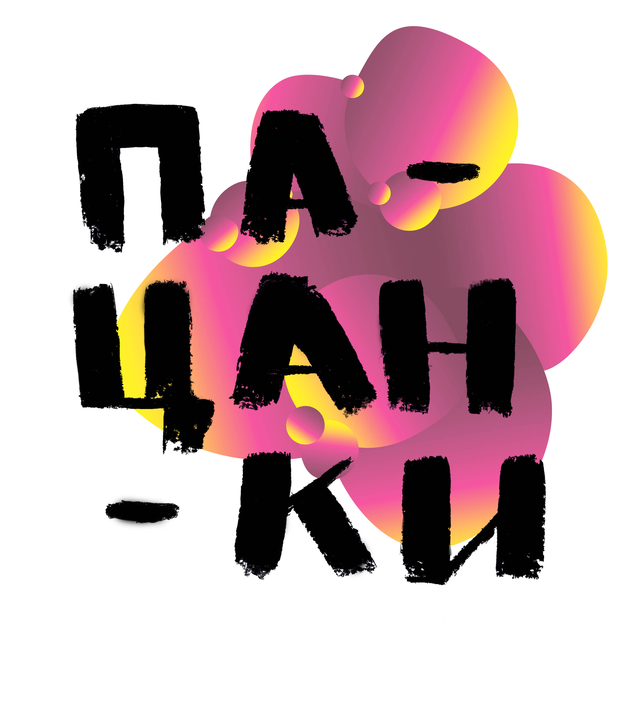Динамика логотипа
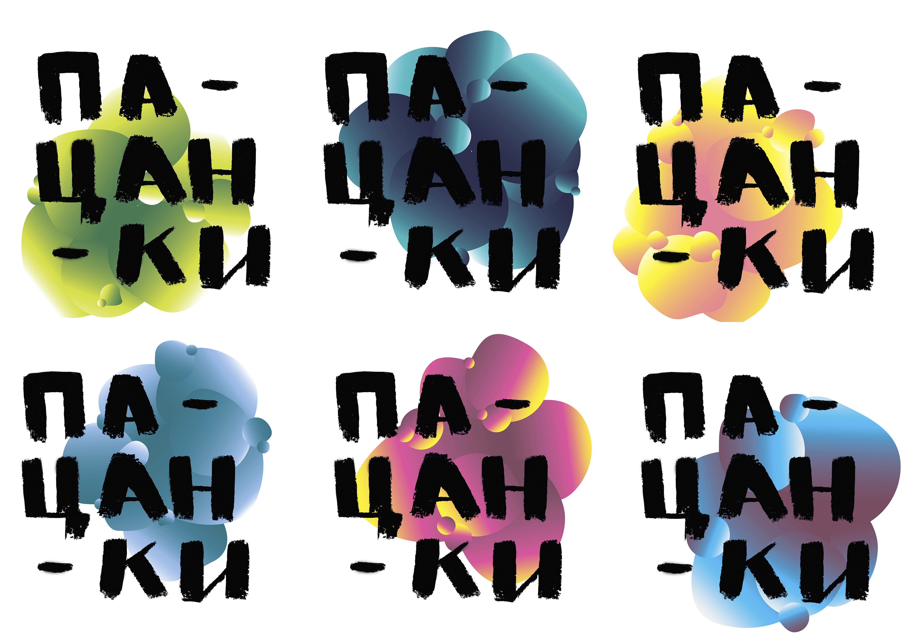Фирменный стиль

Плакаты
 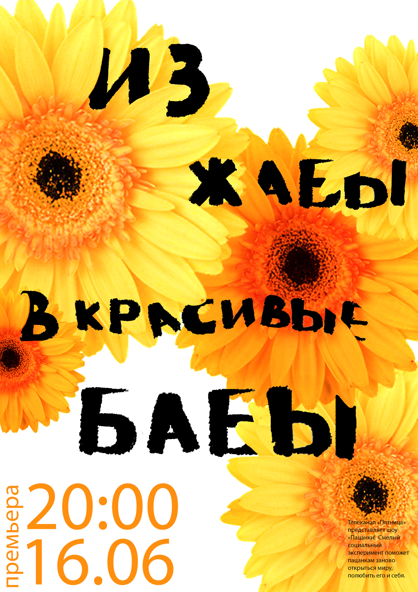
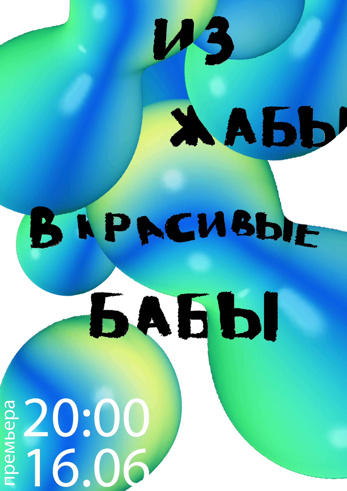
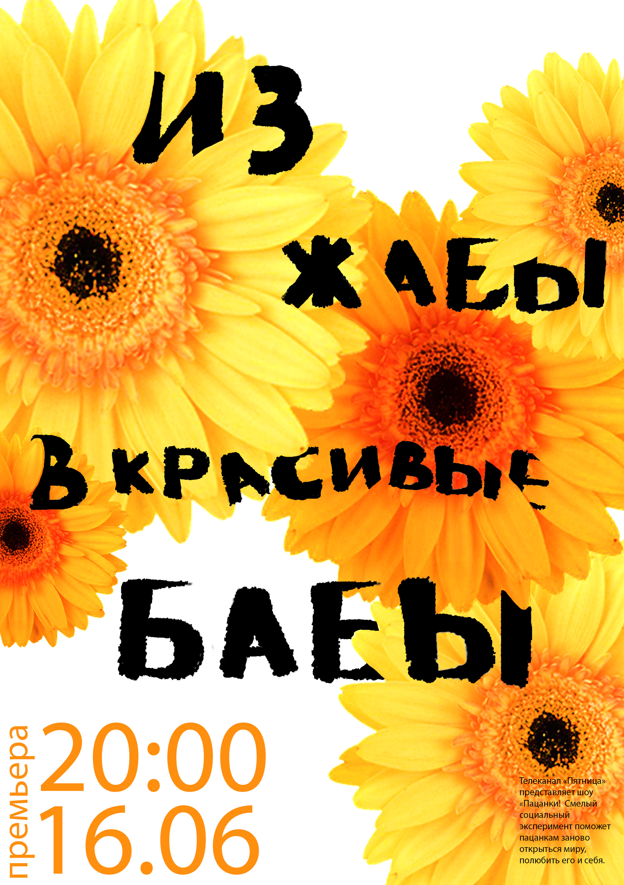
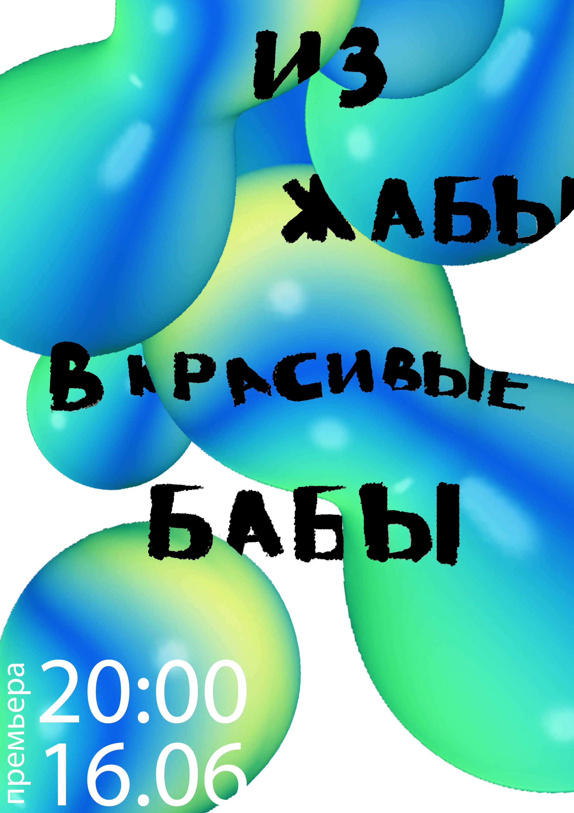